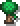
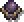
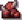
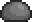
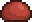
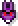

Üdvözöllek az Unbreakable Nexus hivatalos wikipédiáján!
A játék
Az Unbreakable Nexus egy stratégiai idle tower defense játék, amit rengeteg más ehhez hasonló tower defense játék inspirált.
A legfőbb inspirációt a The Perfect Tower jelentette. A játék végtelen újrajátszhatóságot, és ezzel sok kihívást nyújt a játékosok számára. Ez eleinte egyszerűnek tűnhet, de a fejlesztések tömkelege roppant nehézzé teszi a teljes játékmenetet. Ez az oldal megpróbál minden kérdést tisztázni, ami felmerülhet a játékos fejében miközben ezzel a játékkal játszik.
A játékba való belépés után, ha kiválasztottuk a számunkra megfelelő nehézségi fokozatot, illetve pályát azután a kezdetét veszi a folyamat.
A pályák
A játékon belül 3 fő pálya található, és ezen pályák mindegyikén különböző nehézségekkel kell szembenéznie a játékosnak:
 Magical Forest The Void
 Nether Realm
Ha szeretnél minden kis részletet megtudni a pályákról, és a hozzájuk tartozó nehezítésekről, akkor kattints bátran bármelyik pálya nevére.
Az ellenségek
A játékon belül 3 különböző fajta ellenséggel találod szembe magad:
 AlapGyors
 Boss
Ha szeretnél minden kis részletet megtudni az ellenségekről, akkor kattints bátran bármelyik ellenség nevére.
A nehézségi fokozatok
A játékon belül 4 nehézségi szint található, azonban hogy ezeken tudj érvényesülni, szükséges a játékon belüli progesszió:
 Nehézségi fokozatok összefoglalóHa szeretnél minden kis részletet megtudni a nehézségi fokozatokról, és a hozzájuk tartozó szorzókról, akkor kattints az összefoglaló fülre.